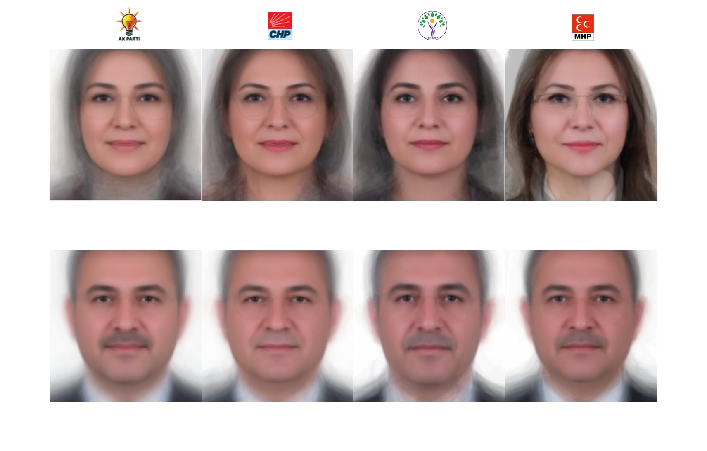

from facer.facer import load_images, detect_face_landmarks, create_average_face
import matplotlib.pyplot as plt
import os
folders = [
'./tbmm_28/akp/kadin',
'./tbmm_28/chp/kadin',
'./tbmm_28/dem/kadin',
'./tbmm_28/mhp/kadin',
'./tbmm_28/akp/erkek',
'./tbmm_28/chp/erkek',
'./tbmm_28/dem/erkek',
'./tbmm_28/mhp/erkek'
]
for folder in folders:
images = load_images(folder)
landmarks, faces = detect_face_landmarks(images)
average_face = create_average_face(faces, landmarks, save_image=False)
gender = 'kadin' if 'kadin' in folder else 'erkek'
party = folder.split('/')[2]
file_name = f'{party}_{gender}.jpg'
plt.imshow(average_face)
plt.axis('off')
plt.savefig(os.path.join('imgs', file_name))
plt.show()1800’lü yıllarda Francis Galton, belirli bir grup insanda ortak olan yüz özelliklerini görselleştirmek amacıyla birçok farklı bireyin yüz fotoğraflarını tek bir fotoğraf filmi üzerine yansıtmış ve bu yüzlerin kompozit görüntülerini oluşturmuştur.
Bugün benzer bir yaklaşım, belirli bir grup insanın -örneğin, milletvekilleri gibi- ortak yüz özelliklerini incelemek amacıyla modern tekniklerle gerçekleştirilebilir.
Bu uygulamada, 28. dönem AKP, CHP, DEM ve MHP milletvekillerinin fotoğraflarını kullanarak parti ve cinsiyet kategorisinde ortalama bir yüz yaratacağız. Uygulamayı GitHub’ta bulunan şu repo yardımı ile yapacağız. Uygulamanın veri seti olan fotoğraflara ise burada bulunan tbmm_28 isimli klasör ile ulaşabilirsiniz.
Öncelikle repoyu proje klasörümüze klonlayalım.
git clone https://github.com/johnwmillr/facer.git Facer
Klonlama işleminden sonra bulunduğumuz dizinde sadece Facer klasöründeki facer klasörünü bırakabiliriz. facer klasörünün içinde ise facer.py ve utils.py dosyaları kalabilir.
Yukarıdaki işlemden sonra aşağıdaki gibi zip’li dosyayı indirip unzip’liyor ve dosyayı bulunduğumuz dizinde açtığımız model isimli klasöre taşıyoruz.
curl -O http://dlib.net/files/shape_predictor_68_face_landmarks.dat.bz2
bunzip2 shape_predictor_68_face_landmarks.dat.bz2
mkdir model
mv shape_predictor_68_face_landmarks.dat model
TBMM’nin web sitesinden alınan görseller .jpe formatında olduğu için facer klasöründe bulunan facer.py dosyasındaki glob_image_files() fonksiyonuna .jpe uzantısını ekliyoruz.
Ortalama bir yüze ulaşmak için uygulanan adımlar burada detaylı bir şekilde veriliyor.
